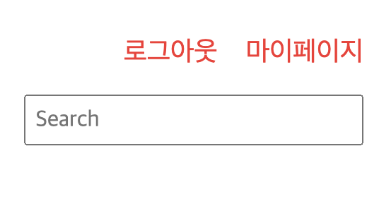

프로젝트) Cafe(웹 사이트) 만들기 7 - 로그인 기능 구현
개발환경
- MacBook Air (M1, 2020)
- OpenJDK 8
- Eclipse 2021-12
- tomcat 8.5
- MySQL Workbench 8.0.19
시작
- 2022.3.4 ~
주제
- 웹 백엔드 수업 중 중간 과제로 개인 프로젝트를 진행하게 되었다.
- 회원가입/로그인/탈퇴 등 기본적인 회원관리 시스템을 가진 웹 사이트를 만드는 것이다. 주어진 기한은
한 달 - 나는
다음 카페를 소규모로 만들어 보기로 했다. 평소 자주 이용하기도 했고 과제의 평가 기준에서 요구하는 기능들을 다 담고 있기도 했기 때문에 이번 기회에 구현해 보면 그동안 배운 것들을 활용하기에 좋을 거 같았다. - 평가 기준에 사이트의 디자인 구현(HTML/CSS 등 프론트엔드)은 포함되지 않기 때문에 본인이 쓰고 싶은 HTML/CSS 템플릿을 구한 뒤 회원 관리 기능을 구현하면 된다.
진행상황
- 오늘은 로그인 기능을 만들었다.
1. login.jsp 페이지 준비
...
생략
<h3>로그인</h3>
<form name="login" action="./main.me" method="post" onsubmit="return finalCheck();">
<div class="formRow">
<label for="MOD_TEXTFORM_NameField">아이디 </label><input id="id" type="text" name="id">
</div>
<div class="formRow">
<label for="MOD_TEXTFORM_NameField">비밀번호 </label><input id="pass" type="password" name="pass">
</div>
<button type="submit" class="btn">Login</button>
</form>
...
생략
submit버튼을 누르면 메인페이지로 이동하되DB조회 결과 확인 후 이동하도록onsubmit조건을 걸어주었다.
2. login.js 생성
var $login = false;
function loginCheck()
{
console.log("loginCheck() 호출");
$.ajax({
type: 'POST',
async: false,
url: "./LoginCheck.me",
data: {
'id': $("#id").val(),
'pass': $("#pass").val()
},
dataType: 'text',
success: function(data)
{
console.log("success data : " + data);
if (1 == data)
{
// 회원
$login = true;
alert("로그인 성공!");
location.href = "./main.me";
}
else if (0 == data)
{
// 비밀번호 오류
alert("아이디 혹은 비밀번호가 일치하지 않습니다!");
$login = false;
}
else
{
// 비회원
alert("회원이 아닙니다.");
$login = false;
}
},
error: function(data)
{
console.log("error");
}
});
}
function finalCheck()
{
loginCheck();
if ($login)
return true;
else
return false;
}
Ajax로DB조회 결과를 알아오도록 했다.
3. DB 조회 결과를 알려줄 서블릿 생성
import java.io.IOException;
import java.io.PrintWriter;
import javax.servlet.ServletException;
import javax.servlet.annotation.WebServlet;
import javax.servlet.http.HttpServlet;
import javax.servlet.http.HttpServletRequest;
import javax.servlet.http.HttpServletResponse;
import javax.servlet.http.HttpSession;
@WebServlet("/LoginCheck.me")
public class LoginCheck extends HttpServlet
{
protected void doProcess(HttpServletRequest req, HttpServletResponse resp) throws ServletException, IOException
{
System.out.println("M : LoginCheck - doProcess() 호출");
req.setCharacterEncoding("UTF-8");
resp.setContentType("text/html; charset=utf-8");
PrintWriter out = resp.getWriter();
HttpSession session = null;
MemberDAO dao = new MemberDAO();
MemberDTO dto = new MemberDTO();
dto.setId(req.getParameter("id"));
dto.setPass(req.getParameter("pass"));
int result = dao.loginCheck(dto);
if (1 == result)
{
session = req.getSession();
session.setAttribute("id", dto.getId());
}
out.print(result);
out.close();
}
@Override
protected void doGet(HttpServletRequest req, HttpServletResponse resp) throws ServletException, IOException
{
doProcess(req, resp);
}
@Override
protected void doPost(HttpServletRequest req, HttpServletResponse resp) throws ServletException, IOException
{
doProcess(req, resp);
}
}
- 로그인에 성공했을 때에만 세션 값을 설정해 주었다.
4. top.jsp에서 로그인 유무에 따라 상단 메뉴 다르게 출력하기
<p class="MOD_HEADER1_Phone">
<%
String id = (String)session.getAttribute("id");
System.out.println("session id : " + id);
if (null == id)
{
%>
<a href="./login.me">로그인</a>
<a href="./join.me">회원가입</a>
<%
}
else
{
%>
<a href="./logout.me">로그아웃</a>
<a href="./myPage.me">마이페이지</a>
<%
}
%>
</p>
top.jsp는 상단 메뉴 부분을 출력하는 파일이다. 모든html/jsp페이지마다 상단 메뉴를 출력하는 코드를 써 놓으면 관리하기 힘들고 중복되는 부분도 많이 생기니까Header와Footer부분을 따로 분리해서 각 페이지마다top.jsp와bottom.jsp를JSP액션태그를 이용해include해 주었다.- 로그인 결과를 받아오면서 저장한 세션 값을 바탕으로 상단 메뉴를 다르게 출력한다.

- 로그인 성공 시 출력하는 상단 메뉴
5. LogoutAction.java 생성
import java.io.IOException;
import javax.servlet.ServletException;
import javax.servlet.annotation.WebServlet;
import javax.servlet.http.HttpServlet;
import javax.servlet.http.HttpServletRequest;
import javax.servlet.http.HttpServletResponse;
import javax.servlet.http.HttpSession;
@WebServlet("/logout.me")
public class LogoutAction extends HttpServlet
{
protected void doProcess(HttpServletRequest req, HttpServletResponse resp) throws ServletException, IOException
{
HttpSession session = req.getSession();
if (null != session)
session.invalidate();
System.out.println("로그아웃 완료");
resp.sendRedirect("./main.me");
}
@Override
protected void doGet(HttpServletRequest req, HttpServletResponse resp) throws ServletException, IOException
{
doProcess(req, resp);
}
@Override
protected void doPost(HttpServletRequest req, HttpServletResponse resp) throws ServletException, IOException
{
doProcess(req, resp);
}
}
- 로그아웃 동작을 수행할 서블릿도 만들었다.

- 로그아웃 완료 시 출력하는 상단 메뉴
- 이제 마이페이지에서 내 정보를 조회하는 기능을 만들어야겠다! ☺️
마감까지
D-22